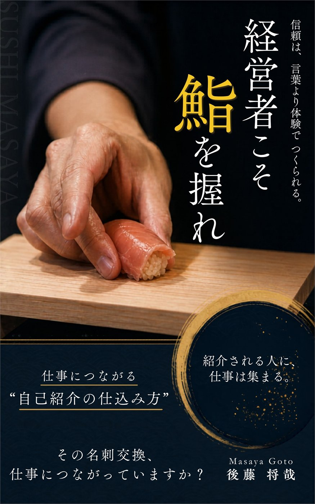
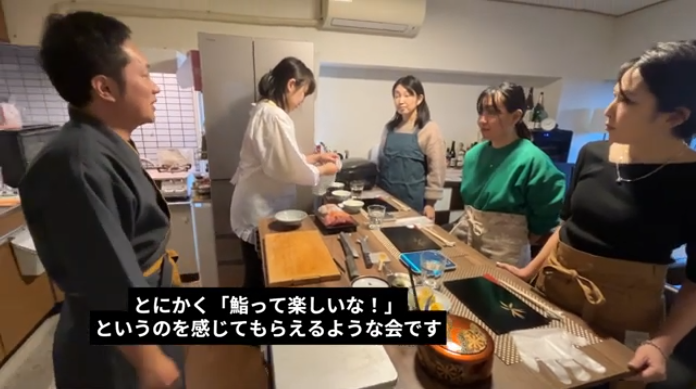

01
肩書きは必要。でも、それだけでは紹介されにくい。
「何をしている人か」は伝わる。でも「誰かに紹介したい」とはなりにくい。

その名刺交換、仕事につながっていますか？
『経営者こそ、鮨を握れ』は、鮨の技術書ではありません。 自己紹介を「話すもの」から「仕込むもの」に変える、出会い方の本です。
Why Sushi？
鮨は"ただ食べるもの"ではありません。目の前の相手と信頼関係をつくるコミュニケーションツールにもなります。
ネタを仕込む。シャリを整える。一貫を握って、目の前に差し出す。 そのプロセスそのものが、相手への姿勢になります。 肩書きや実績を説明するよりも、その人の記憶に残る体験価値。
本書が提案するのは、鮨職人を目指すことではありません。鮨を握るという体験を、"人との出会い方を変えるフック"として使うことです。
Problem
交流会、会食、紹介の場。会社名や肩書き、実績を伝えることは必要です。 でも、それだけだと相手から見れば「よくある自己紹介」で終わってしまう。みんなと一緒ということです。
「何をしている人か」は伝わる。でも「誰かに紹介したい」とはなりにくい。
実績や肩書で相手から尊敬はされても、信頼されるわけではありません。
また会いたい、誰かに紹介したい。その理由は、言葉よりも「その人と出会った場面」から生まれます。

著者について
大学卒業後、大手消費財メーカーと外資系ベンチャーで営業からマーケティングまで経験。
30代後半、未経験から鮨職人の道へ。半年足らずの修業で、8席の会員制鮨屋の大将に抜擢されました。
そこで残せた実績は、平均予約率120%超。 来店者の大半が、その場で次回予約を取ってくれました。
ただ、ビジネスマンとして独立した当初は、自己紹介がうまくいかない時期が長く続きました。 肩書きを整えても、実績を語っても、なかなか次につながらない日々。
転機は、ある友人の一言でした。 「うちで鮨握ってよ」
半分ノリで引き受けて、鮨会を開催。すると、驚くほど現実が変わり始めました。 自己紹介をする前に、相手のほうから興味を持ってくれる。会話が続く。紹介が生まれる。 気づけば、色んな仕事につながっていました。
最初は偶然だと思ってました。 でも、同じようなことが僕の周りにも起き始めた。 これはもう、自分一人の話じゃない。
その確信を、一冊にまとめたのが本書です。
現在は、紹介制鮨会「鮨まさや」を主宰。 SNS集客ほぼなし、口コミだけで毎回満席が続いています。

main theme
本書のテーマは、鮨そのものではありません。 「人との出会い方」です。
何を話すか。どう肩書きを見せるか。どんな実績を伝えるか。もちろん、それらも大切です。 ただ、紹介や会食の場で相手の記憶に残るのは、相手が人に話したくなる具体的な体験です。
鮨を握ることは、その体験をつくる入口になります。 自己紹介という入口の構造そのものを再定義したのが、このKindle本です。
鮨は最強のコミュニケーションツール
営業トークを磨くのではなく、あとから思い出せる場面をつくる。出会い方を変える発想です。
「鮨を握る経営者」というフックがあると、紹介者があなたのことを誰かに話したくなります。
サービス内容を覚えてもらう前に、また会いたいと思われること。会食や紹介の場では、その順番が重要です。
Customer Review
話せることと、記憶に残りご縁が続くことは別。その違いに気づかされました。
私の中でのまさやさんの印象は「お話がとても上手で、想いを同じにする人が集まる方」でした。 ところが本書を読み、「自己紹介をしても、後に繋がらない」「印象に残らない」という悩みや葛藤が過去にあったと知り、びっくりしました。
わたしがまさやさんと知り合った時には、既に「鮨」はありました。 鮨とご縁を紡ぐことが、かちっとはまったんですね。 本書を読み進めていくうちに、ご自身だけでなく周りの方々の人生も前に進んでいく様子を共に体験できたように感じました。
まさやさんが提案しているのは、自己紹介の設計の視点。
きいさん（ライター×デザイナー）

Target
鮨が好きな人だけに向けた本ではありません。紹介・会食・初対面の場を、"次につながる出会い"に変えたい人のための一冊です。

Bonus
本書を読んだ方限定で、鮨握りの3STEPと、3時間で鮨が握れる実践講座の一部をご用意しています。なぜ世の中の鮨講座が難しいかを理解できます。
まず本を読むKindle本
経営者が鮨を握る理由は、奇抜な肩書きをつくるためではありません。 相手に覚えてもらい、紹介され、また会いたいと思われる出会い方を、自分で仕込むためです。